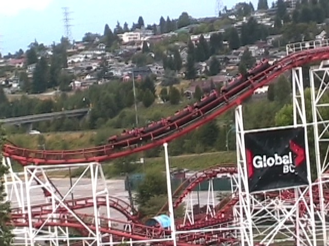
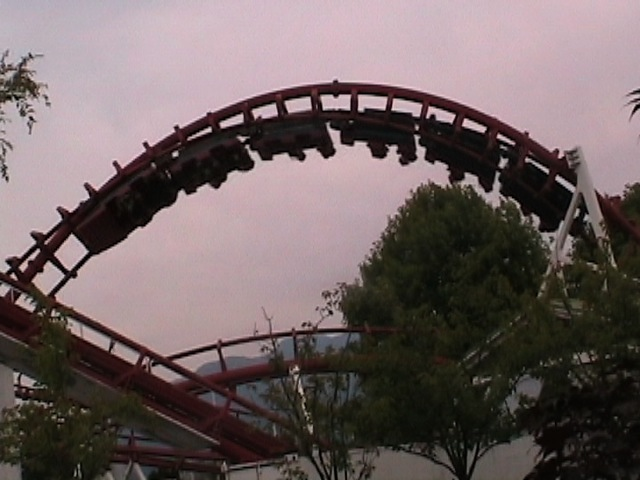
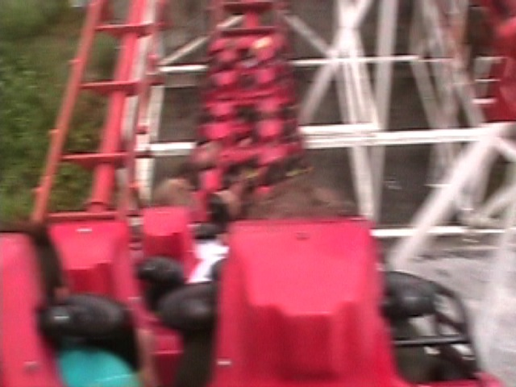

| |
Corkscrew Review

For today's review, we're here at PNE Playland. Today's ride we'll be reviewing for you is Corkscrew. This ride is also known as Bullsh*t the ride, due to the fact that it was in the horrible peice of sh*t known as Final Destination 3. Oh how I hate that movie. Oh how I hate that movie with EVERY FIBER OF MY F*CKING BEING!!! But enough about that. Once you get in the cars and pull down the OTSRs, you're off. The lifthill is quite slow, so it takes a little while to get to the top. Once you reach the top, you dip and go through the turn, and then, you go through the drop. The drop is not much, but it's fun. You get a small little pop of airtime there. You then rise up through another hill. Not much, but still fun. Then you start to go through a banked turn. This then leads us through the corkscrews. The corkscrews are fun, and a little disorienting, but they're still just corkscrews. Now with an Arrow Corkscrew, you'd be heading into the brake run right now, but Vekoma still has some tricks up it's sleeve. You then go up a curved hill, this causes us to lose all our speed and begin to crawl. We then roll through some straight track. It's all calm, then we head down a small drop. This gives us a nice little pop of airtime, which is fun. We then head into another curve turn, except this time, we go through some strange turnaround type of element. The turnaround leads us past some straight track by the corkscrews. After a big slow turn, we glide straight into the brake run. I don't know where the painful ride rumor came in because Vekoma Corkscrews are fun and not painful. The only thing painful about this ride is the fact that it helped create Final Destination 3. Now Corkscrew is currently SBNO. I know I heard everyone saying that they demolished this coaster, so I don't have any hope of this coaster ever reopening. ESPECIALLY considering the fact that Vekoma Corkscrews are a dying breed with only 2 still running in the world (France and Brazil. Both at what appear to be credit whore parks not on my "Must Visit" list). But they're still a fun ride. OK. Not great, and I'm not gonna shed any tears if all the Vekoma Corkscrews go extinct, but....they are better than the Arrow Corkscrews.
6/10
Location: PNE Playland
Opened at Boblo Island in 1985
Moved to PNE Playland in 1994
SBNO since 2019
Built by: Vekoma
Last Ridden: July 12, 2009
I have ridden this exact same ride at the following parks.
Holiday Park
La Ronde
Corkscrew Photos







Home
|